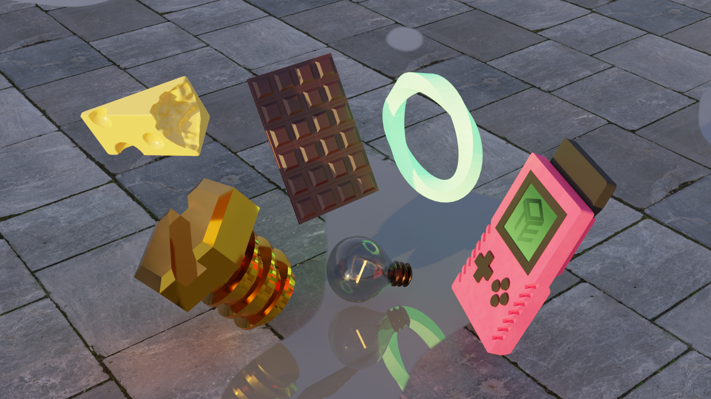
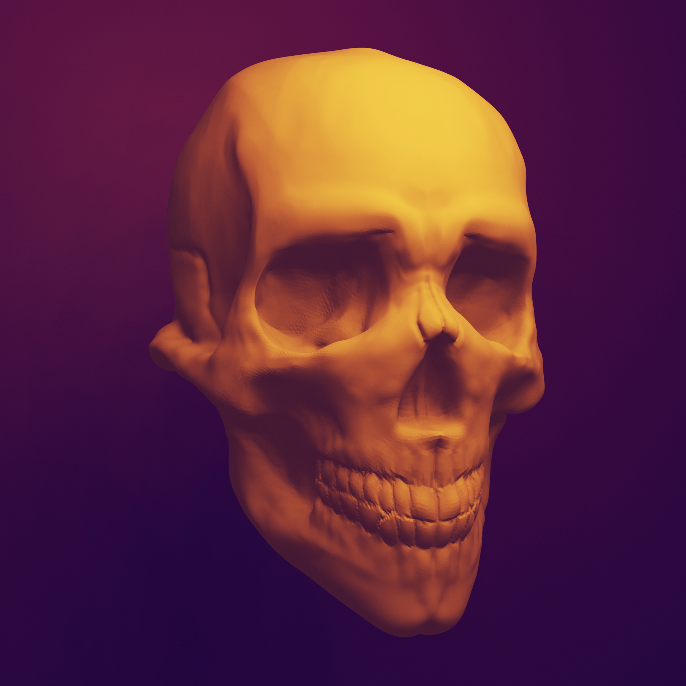
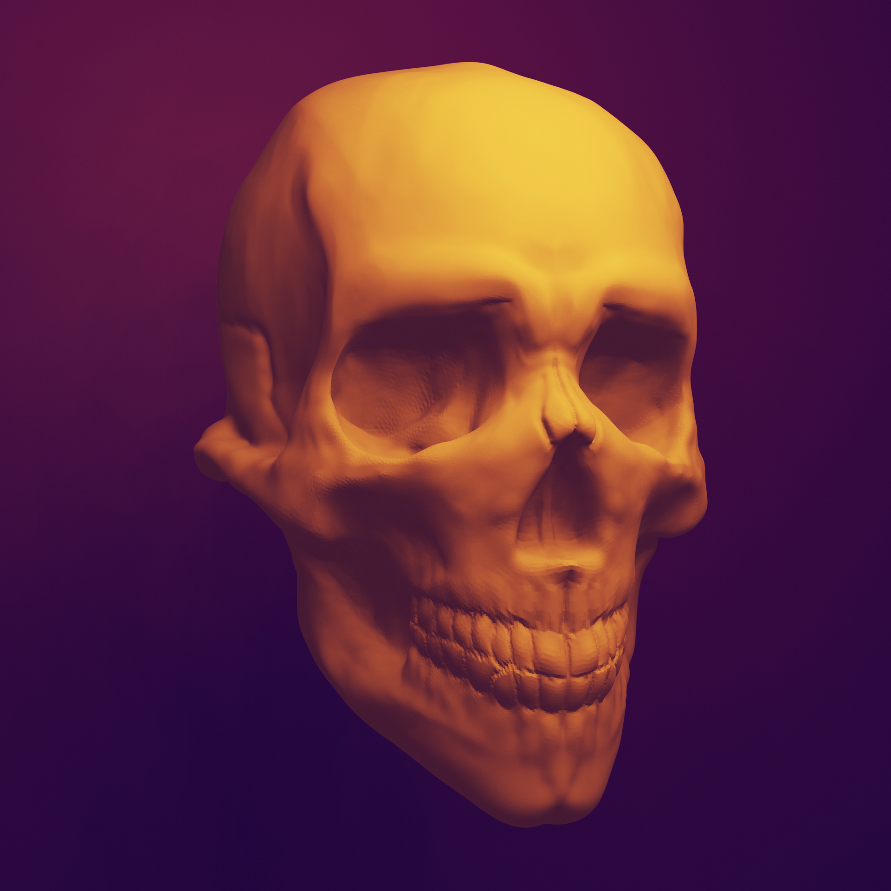

Collection of various 3D projects made during classes and in free time. Below: 3D modeling, 3D sculpting, Blender's grease pencil tool and 3D scanning.
 


Date of realisation: 2022
Project type: Personal experiments
Software used: Blender, Photoshop, Substance Painter
Role: 3D modeling and sculpting, Texture design, 3D scan